The following is a high-level triage list to assist employees in accessing the ReadySet application for Employee Health (EH) Program enrollment. The web-based application allows participants to:
Create a username and password and
Access their personal workspace called My Health.
The concept “Account Setup” automatically performs the following functions when a person is using the New User? Click Here to Begin process:
Step 1: Does Participant Demographic Record already exist in ReadySet?
NOT SURE – Error message – Indicates Data Entry Error or Found More than one match in ReadySet (see section H)
Step 2: System creates Participant Demographic Record (aka Self Enroll) (see section I).
If Population Type = Employee (in client data feed) ReadySet will not allow self-enroll. If Population Type = All Other(s) the system will allow self-enroll.
This is to minimize duplicate records in system.
Step 3: Does Participant already have username/password in ReadySet?
Passwords: follow the reset password instructions supplied below.
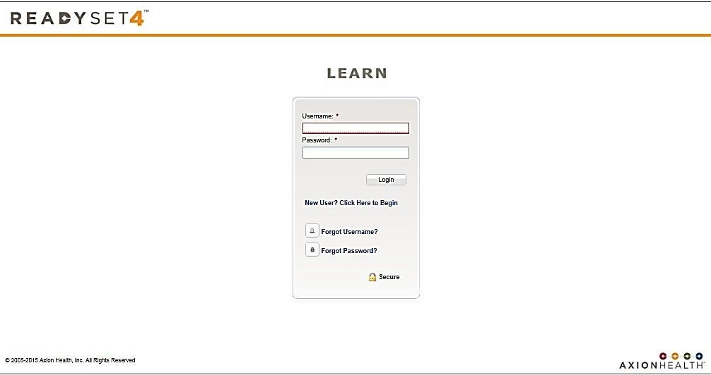
Is the Participant in the System? Did Employee Successfully Set Up an Account (Username/Password)?
To determine the answers to the above questions:
Login to ReadySet using URL provided.
Click on Help Desk tab.
Search for employee by name or any option listed (figure 2)
Verify you are speaking to the correct employee
Participant name found with a username, the employee has successfully setup an account. You can
Help desk reset participant password
enter new password and click update (figure 3)
cannot reuse passwords but every 3x’s
can unlock account due to multiple login attempts
Instruct participant to reset password (refer them to login page (figure 4)
Assist them with username access (figure 4)
Retrieve their username
Participant will need Organizational Code
Participant will need to answer security questions
Participant name not found, instruct participant to proceed to New User? Click Here to Begin using instructions supplied by EHS/Recruiter.
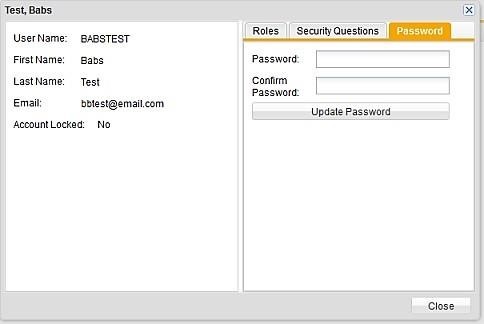
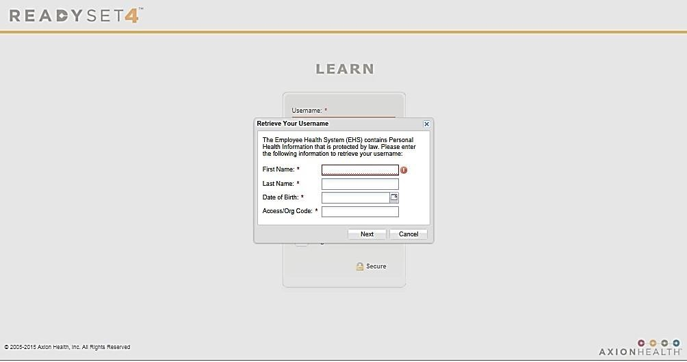
Create New Account Instructions That Are Sent To Participants
Example: Follow these easy steps to complete the process:
Click the link below and begin. Follow the simple, step-by-step online process and create a personal username and password. You will be required to enter specific information regarding your role with “Client”, as well as demographic information. Remember to keep your username and password stored in a safe location. https://client.readysetsecure.com
First time user (or don't remember if you are a first-time user):
Click New User? Click Here to Begin and follow the instructions
Enter the Access/Org Code (4-digits) that was provided in actual mailing
Select the Program Type that was provided in actual mailing
Returning user - has username and password:
Go to step 2
Login and complete your survey(s). After you create a username and password, you will be automatically logged into the application. Follow the instructions to complete your Survey(s) on your My Health workspace. There is no need to print any survey(s). EHS will be able to view your survey(s) electronically.
Forgot Username or Password
Click Forgot Username?.
Complete all required fields and click Next.
Answer the Security Question.
Your username will display.
Click Forgot Password?.
Enter your Username and Date of Birth.
Click Next.
Select the option preferred - password may be reset immediately or by email process, you will be required to answer a security question.
Step 1a. Account Setup Employee: First time to ReadySet (Function: Does Participant Demographic Record already exists in ReadySet? YES)
Successful path for Employees
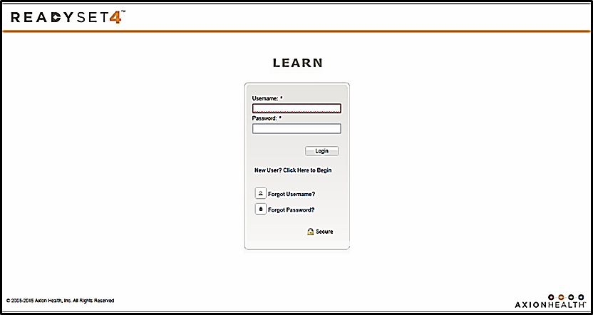
Click New User? Click here to Begin.
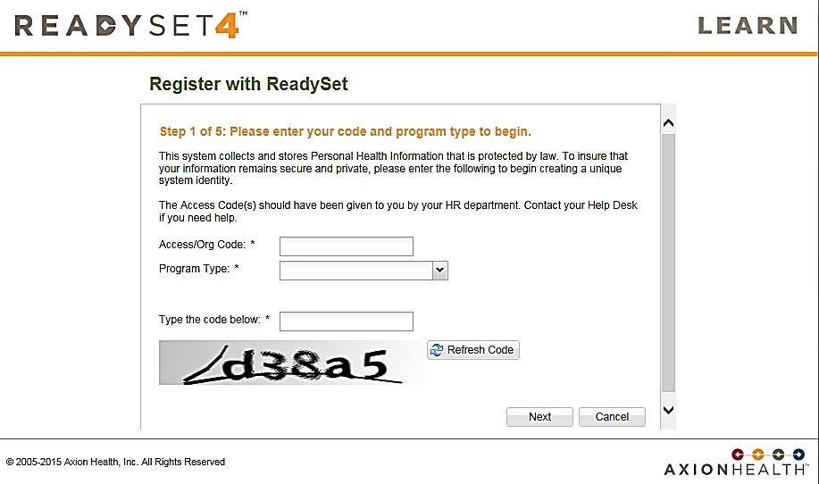
Enter all required fields (the key participant validators). System begins to see if the participant already exists in the database. This reduces the chance of duplicate participant records in the database.
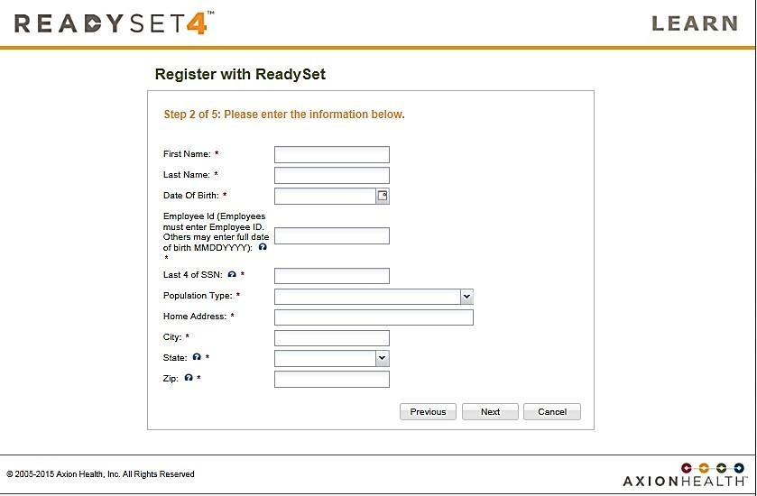
Enter additional matching criteria to identify the participant in client data feed.
Must match three criteria exactly.
If Population Type = "Employee" – some clients have a data feed, so if Population Type = "Employee", and system cannot find an exact match, self-enrollment is NOT allowed and Notification to Contact help desk is displayed.
If Population Type = "Non-Employee" (new participant, volunteer, student, contractor) – If system does not find an exact match, self-enrollment is allowed (system will create an “Emp” record in the system).
If system finds more than one participant in the system and cannot make an exact match, a Notification to contact the help desk is displayed.
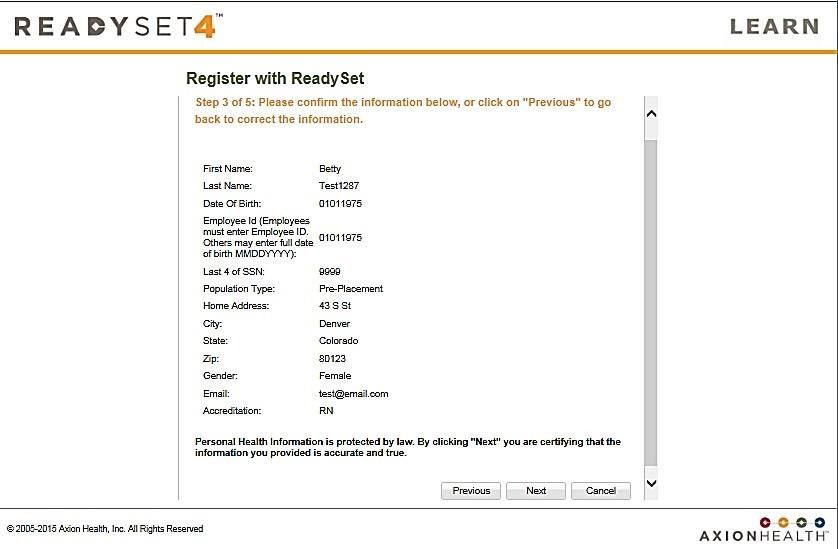
If participant is uniquely ID’d in the ReadySet System, all data entered will be displayed and the participant is asked to validate information (next step is K).
G. Does Participant Demographic Record already exist in ReadySet? No
Participants will be asked to enter additional demographic data needed for EHS and allowed to Self-Enroll.
H. Function: Does Participant Demographic Record already exist in ReadySet? Not Sure
An error message will occur stating that participant could not be uniquely identified. You can give participant key information about how their demographic data is stored in the database. This should solve the issue.
I. Self Enroll (Function: System creates Participant Demographic Record
Participants will be asked to enter additional demographic data needed for EHS.
Population Type = "Non-Employee" (new participant, volunteer, student, contractor) – If system does not find an exact match, self-enrollment is allowed (system will create an “Emp” record in the system).
If system finds more than one participant in the system and cannot make an exact match, a Notification to contact the help desk is displayed.
J. Username/Password: (Function: Does Participant already have username/password in ReadySet? YES
A message displays that username already exists. Use the links on the right to reset password or retrieve username.
K. Username/Password: (Function: Does Participant already have username/password in ReadySet? NO
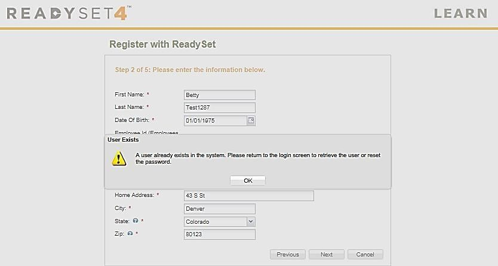
Participant creates username and password.
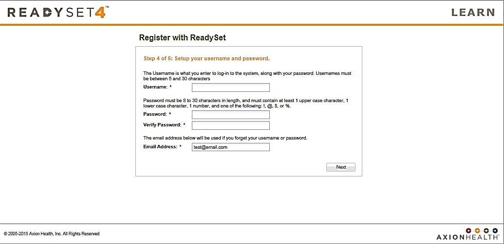
Participant sets up security questions that will be used to retrieve username or password if needed in the future.
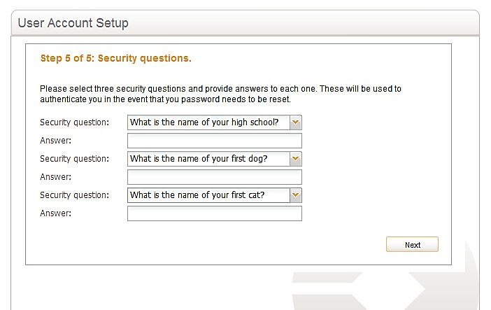
Participant completes Account Setup process and automatically logged in. At this point:
Participant has demographic record in ReadySet database.
Participant has username and password and security questions.
L. Login to My Health and Complete Health Assessments
Upon entering the site the first time you will be required to click Agree and enter site. Waiver (content varies by client).
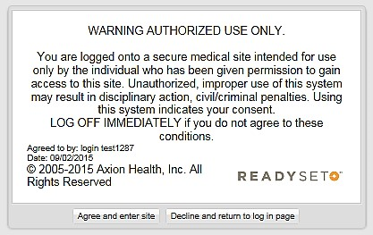
My Health Welcome workspace (content on welcome page varies by client).
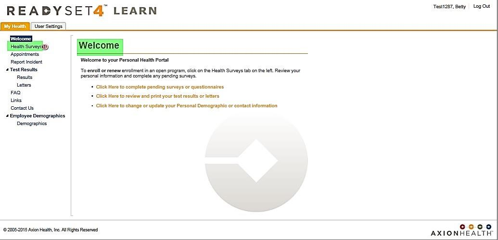
Choose Health Surveys to complete your Health Surveys.
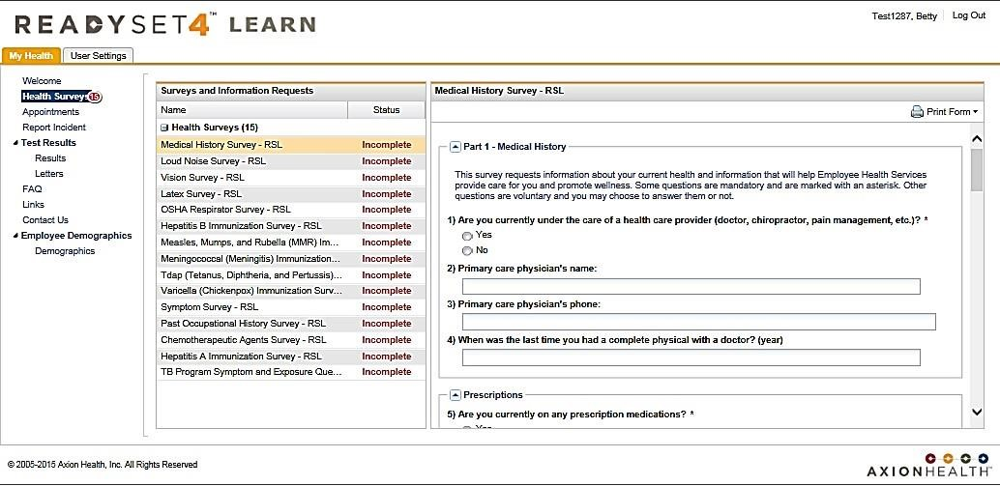
Health Surveys Page (surveys listed will depend on programs assigned by EHS to participant).
RED/INCOMPLETE – participant must complete and click Submit to be complete.
GREEN/[checkmark] – survey is complete; data saved and locked in ReadySet Participant DOES NOT need to print. EHS has access to all data.